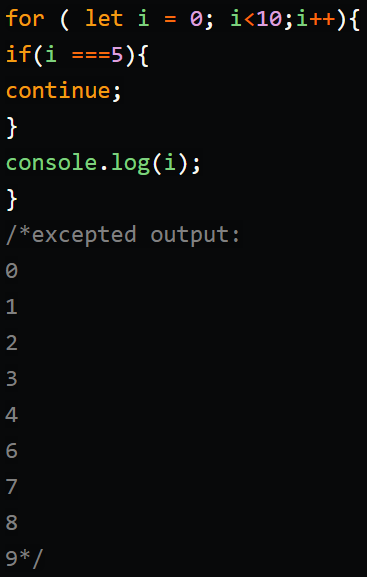
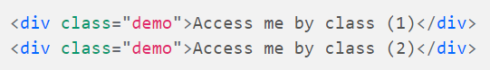
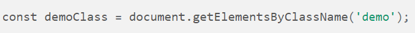
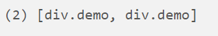
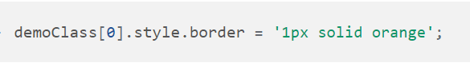
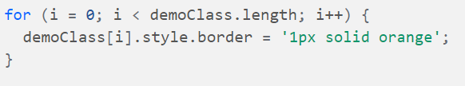
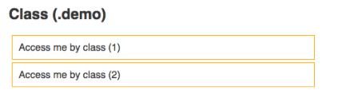
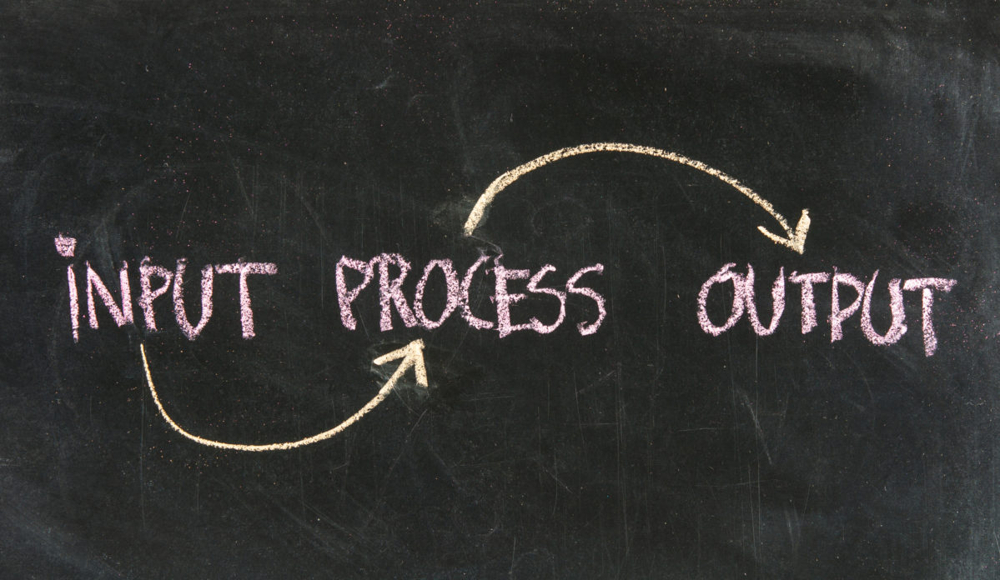

Differences between HTML & CSS.
Html is like our human skeleton, what we can see is just bones that are put together to create the internal framework of the body. On the other hand, CSS is everything that has to do with our appearance like the color of our eyes, lips and skin, the shape of our body and our height, among others.
Here is an image for better understanding

Control Flow and Loops
Control flow is the order that the instructions or statements or functions are executed in our code. It is similar to what we do in our everyday routine, after having a shower in the morning, we get dressed, have breakfast and go to work or uni. To regulate the control flow, in coding, we use loops which are in charge of doing something over and over again.
So, everything will move smoothly, unless there is something that tell us or the code to do a different thing. For example: we overslept, covid-19 quarentine, or forgot to do the shopping. Things like these happen in coding as well, and in order to let our code know what to do next, we need to use statements.
Break
Imagine you get up, have a shower, get dressed as you do everyday and when you open the fridge, there is nothing for you to have breakfast, you immidiately stop your routine. In coding, will happen a similar thing the loop will continue until a break occurs. See on the image below.

As we can see, the loop will iterate through 0 (get up),1 (have a shower) and 2 (get dressed) until it gets to number 3 (have breakfast), where the break is and loop must stop.
Continue
Now, what would you do if you can't have breakfast at home? go through the morning without coffee? I bet you won't. Well, I would probably go to starbucks on my way to work. In coding, when a continue statement appears, what happen is that the loop will jump that iteration and will continue with the next one. Pretty similar to what we did with our breakfast, we skip breakfast at home and continue to our way to work or uni. Let's see the image.
Here, the loop iterates over all the numbers from 0-4, it realised that there is a continue statement in number 5 so, it skipt it and continue its iteration from 6 to 9, as 10 is not less than 10, the iteration stopped.
The DOM
The DOM stands for "Document Object Model" and it is used mainly by developers to add or remove and change stylings of elements from the HTML. If you can not remember what the HTML is, check the explanation above.
The way we can access to the elements through the DOM is by using JavaScript, which is a programming language, or by using j-Queries, which is a library from JavaScript.
In HTML, we can add a "class" to an element in oder to apply an style (color, border, text-decoration,etc) or apply it to the name of the element (h1/span). So, when we want to reach that element using JavaScript, we can call the element by that className or name and manipulate it. If this happens, we will get an group of elements (an array) since there might be other elements with the same class or name. We can also use an "id" if we want to make the element unique on the page. So, we will get only that element and we will be able to interact with it through the DOM. Let's have a look at an example using a class.
In this case, we are going to access our elements through the console and put them in a variable called "demo".
In this case, we are going to get an array with two elements
Difference between accessing data from an array and objects
To explain this, let's bring the previous array example. After putting the elements on the variable "demo, we got an array with two elements. Now, what if we want to modify the first element, how do we do it? We have to use an index number,starting from 0.
If we want to apply changes to all the elements of the array,not just one, we can use a "for" loop, and loop throught every item in the array.
It will look like this on the browser
On the other hand, objects save the data into properties or keys and values (key:value) that can not be access through index numbers because objects does not remember the order of keys or properties. Let's have a look at an example on how to access object data.

In this image, we can see that we have three objects with different data but we only want to access to the keys of the first object.
What are functions? Why are they useful?
A fuction is similar to a procedure that we use to perform a task. This procedure may take inputs and produce an output.
Functions are useful to avoid repeating ourselves while coding, so instead of writing the same lines many times, we just create a function and call it whenever we need the procedure to be done. For example:

In the example we can see that the function "SayHi" has been defined and it will display a message "Hi..." together with the firstName and lastName that you provide when calling the function. If you write SayHi ("Meli","Waigant") it will popup "Hi Meli Waigant".
Thank you for reading